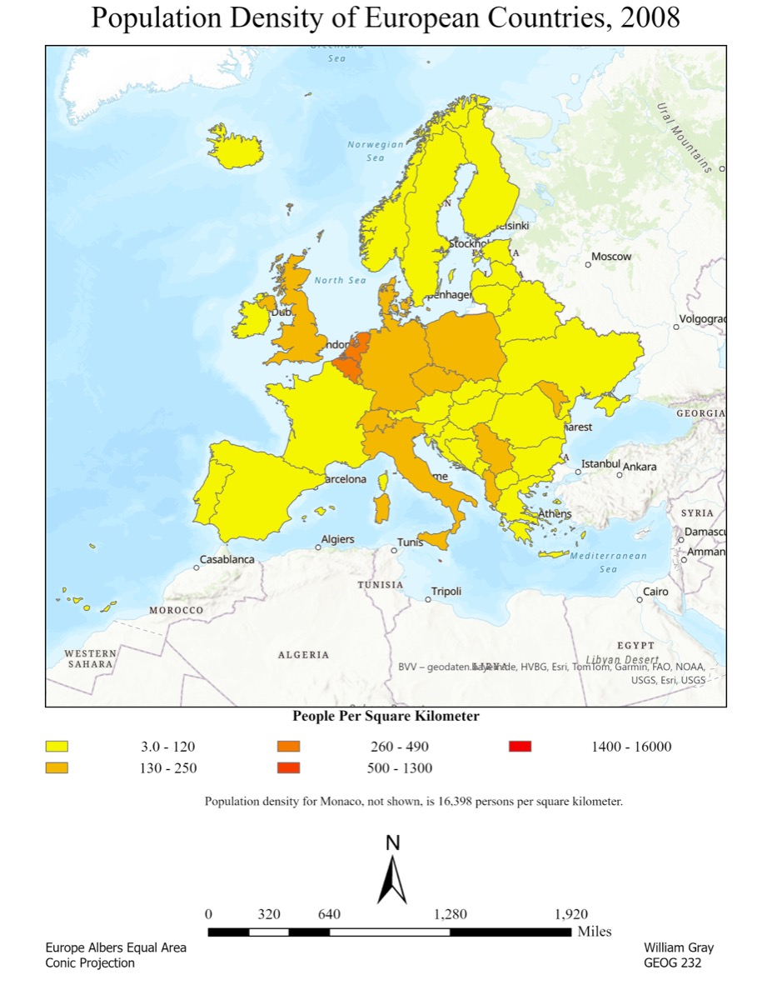

Thematic cartography · GEOG 232 final project · Fall 2024
Is population growth moving people into tornado country?
A bivariate thematic map and a published ArcGIS StoryMap, setting seventy-two years of tornado tracks against county population density for 2010 and 2020.
The problem
Over a thousand tornadoes are recorded in the United States in an average year. The question this project asked is not where they happen — that is well mapped — but whether population growth is steadily moving more people into the ground where they happen most.
I wrote it for a specific audience rather than a general one: people living in tornado-prone areas, emergency management staff, urban planners and the officials who decide where preparedness money goes.
My role
Sole author. I chose the topic and data, designed the bivariate thematic map in ArcGIS Pro, published it to ArcGIS Online, built the StoryMap around it, ran the peer review, and produced the revised final version.
Data and method
- Tornado tracks, 1950–2022 — seventy-two years of records, colour-coded by intensity so frequency and severity read together.
- County population density for 2010 and 2020 — two census snapshots, so change over the decade is visible rather than a single static surface.
- Built in ArcGIS Pro, published to ArcGIS Online, and wrapped in a StoryMap that introduces the topic before the map appears.
The review cycle
The draft went to three reviewers, each asked for three strengths and three criticisms — nine critiques in total. They were consistent with one another: the sheer volume of tornado points overwhelmed the density layer underneath, the map had no way to toggle layers, and the legend was missing.
I revised against that feedback, added the missing legend, replaced the supporting image with one showing tornado damage to a community and repositioned it so the page flowed better, and expanded the written analysis of how density and tornado frequency relate.
The map for this project is interactive rather than a static sheet — tornado tracks over county density, pannable and zoomable, inside the StoryMap narrative.
Open the StoryMap →
What I found
There is significant overlap between densely populated areas and tornado occurrence, and it concentrates in the Midwest and the South. Tornado-prone country and growing urban centres are increasingly the same country, which raises the potential for casualties and damage from a given event.
The takeaways I drew for the audience were:
- Tornado-prone areas often coincide with growing urban centres, increasing potential casualties and damages.
- Decision-makers should prioritise disaster relief and preparedness in those regions specifically.
- The practical needs that follow are more robust infrastructure, improved early warning systems, and better community planning.
What I would do differently
The reviewers were right about the point density. I pushed back at the time, because the map has to open zoomed out to show the full national extent and every tornado track is in there at that scale. But the honest answer is that the criticism identified a real problem even if the proposed fix did not work: at national zoom the population layer is genuinely hard to read underneath the points.
Clustering is the fix I would build now. Grouping tracks into expandable clusters would let the map open legible and still carry every record, which is what the reviewers were reaching for.
Layer control should have been there from the start. Letting the reader switch the tornado layer off to inspect density on its own costs nothing and solves the overlap complaint outright.
I was constrained by the data I could get. The source I used would not let me edit the attribute table, and it was the only one covering both population density and tornadoes for the period I wanted. With more time I would have assembled the two layers from separate sources and kept control over the symbology.
- Record span
- 1950–202272 years of tracks
- Density layers
- 22010 & 2020 census
- Peer reviewers
- 39 critiques logged
- Format
- StoryMapArcGIS Online
- Audience
- Planners& emergency management